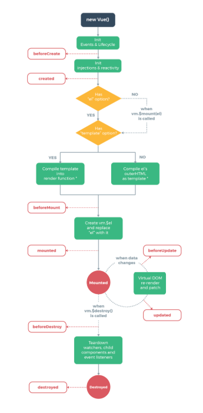
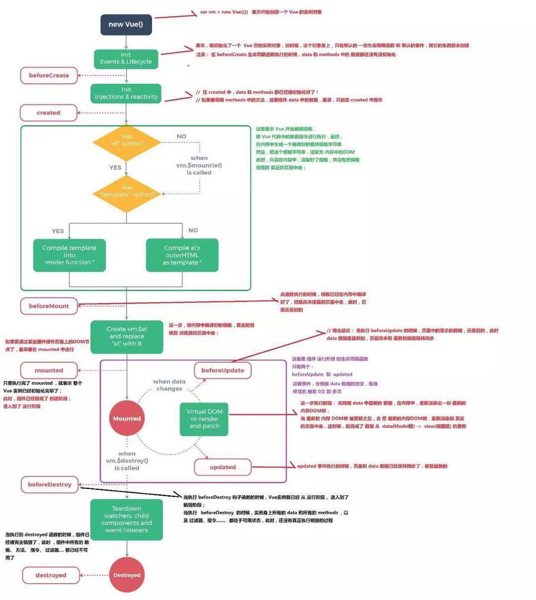

二话不说，直接上图，先干为敬

一，生命周期是什么？
谈到Vue的生命周期，首先我们要new一个Vue的实例，即new Vue()。故事就是从这屋里开始的，从开始创建，初始化数据，编译模板，挂载DOM，到渲染到页面，更新数据，再次渲染，销毁等一系列过程，就叫做Vue的生命周期。
二，钩子函数
什么是钩子函数？上图中的beforeCreate()，created()，beforeMount()，mounted() beforeUpdate()，updated()，beforeDestory()，destoryed() 都叫做钩子函数。至于为什么叫做钩子函数呢，这里我说一下看完别人的解释后的总结：”钩子”其实就是回调。在可“放置”钩子的地方，我们叫其为“挂载点”，在系统执行到挂载点时，检查是否有钩子，有就回调，有前置钩子和后置钩子，他们用来设置在增,删,改,查数据前后的自定义操作。利用这些钩子导出内部数据或状态给外部调用者看，可以使编程者不用关注组件是如何启动和执行的，只需要关注需要的事件点上即可。
三，从头开始

首先new Vue()创建一个Vue的实例对象
执行了init，initial是组件里面默认执行的，在init的过程中首先调用了beforeCreate()
beforeCreated()表示实例被完全创建出来之前会执行它，在执行的时候，data和methods中的数据还没初始化，即属性还没有生效。
然后在injections（注射）和reactivity（反应性）的时候去调用created()，这个时候组件实例已经完全创建，属性也绑定，data和methods都已经被初始化好了，最早能操作的，但是DOM还没生成，$el还不可用。
当created完成之后，它会去判断instance里面是否含有“el”这个option（选项），如果没有的话，它会调用vm.$mount(el)这个方法，然后执行下一步；如果有的话，直接执行下一步。紧接着会判断是否含有“template”这个选项，如果有的话，它会把template解析成一个render function ，这是一个template编译（模板编译）的过程，结果是解析成了render函数：
render (h) {
return h('div', {}, this.text)}
（ render函数里面的传参h就是Vue里面的createElement方法，return返回一个createElement方法，其中要传3个参数，第一个参数就是创建的div标签；第二个参数传了一个对象，对象里面可以是我们组件上面的props，或者是事件之类的东西；第三个参数就是div标签里面的内容，这里我们指向了data里面的text。）
这里Vue开始编译模板，把Vue代码中的那些指令开始执行，最终在内存中生成了一个编译好的模板字符串，然后把这个模板字符串渲染成内存中的DOM，但是还没有挂载到页面中。
beforeMount()：表示模板已经编译完成，但是还没有把模板挂载到页面中去，在beforeMount()执行的时候，页面的元素还没有被真正的替换过来，还是，在挂载之前被调用，相关的render函数首次被调用。
把内存中渲染好的DOM真实的挂载带浏览器页面中去。
mounted()：el被新创建的vm.$el替换，内存中的模板已经挂载到页面中去了，页面已经被渲染好了，如果要操作DOM节点最早就是在mounted()里面。
render函数是发生在beforeMount和mounted之间的，这也从侧面说明了，在beforeMount的时候，$el还只是我们在HTML里面写的节点，然后到mounted的时候，它就把渲染出来的内容挂载到了DOM节点上。这中间的过程其实是执行了render function的内容。
在使用.vue文件开发的过程当中，我们在里面写了template模板，在经过了vue-loader的处理之后，就变成了render function，最终放到了vue-loader解析过的文件里面。这样做有什么好处呢？原因是由于在解析template变成render function的过程，是一个非常耗时的过程，vue-loader帮我们处理了这些内容之后，当我们在页面上执行vue代码的时候，效率会变得更高。beforeMount在有了render function的时候才会执行，当执行完render function之后，就会调用mounted这个钩子。
只要执行完了mounted()，就表示整个Vue实例已经初始化完毕，开始从创建阶段进入运行阶段。组件运行期间执行的函数只有两个：beforeUpdata()和updated()，会根据data数据的改变有选择性的触发0次到多次。
beforeUpdata(){}表示界面还没被更新，数据肯定被更新了，当执行beforeUpdata(){}的时候，页面中显示的数据还是原来的，data{}里面的数据就已经发生了改变 。
从beforeUpdata()到updated()的过程中，最新的DOM树被更新后，会把最新的内存DOM树重新渲染到真实的页面中去，这时候就完成了从数据data（Model层）=》view（视图层）的更新，updated(){}事件执行的时候，页面和data数据已经保持同步了，都是最新的。
activited：keep-alive专属，组件被激活时调用
deadctivated：keep-alive专属，组件被销毁时调用
当执行beforeDestory(){}的时候，Vue实例就已经从运行阶段，进入到了销毁阶段；当执行beforeDestory的时候，实例身上所以的data和所以的methods，过滤器，指令…都处于可用状态，此时，还没有真正执行销毁的过程
当执行destoryed(){},组件已经被完全销毁了，此时组件所以的data，methods, 指令，过滤器所有的东西都已经不可用了